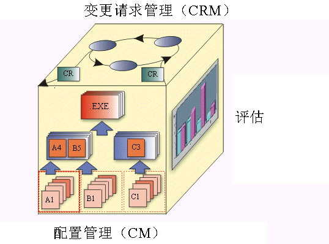

|
CM 系统的主要方面包括以下内容：
-
变更请求管理
-
配置管理（CM）
-
变更跟踪
-
版本选择
CM 系统还可能包含：
以下 CM 模块表示了它们之间的相互依赖性，用于图示 CM 系统的各个主要方面。

-
变更请求管理（CRM）－ 处理为了评估对现有产品所请求的变更在成本和进度安排上的影响所必需的组织基础结构。“变更请求管理”将处理“变更复审团队”或“变更控制委员会”的工作。
-
配置状态记帐（评测） － 用于根据在产品开发过程中发现和修订的缺陷的类型、数量、比率和严重性来描述产品的“状态”。从这一方面得出的度量值（无论是通过审计还是原始数据）均有助于确定项目的全面完成状态。
-
配置管理（CM） － 描述产品结构并确认其组成配置项，这些配置项在配置管理流程中被视为可定单一版本的实体。CM
要处理的任务是定义配置、构建和标注以及将已定版本的工作产品收集到组成集合中，并保持这些版本之间的可跟踪性。
-
变更跟踪 － 描述在何时、因何原因对元素执行了什么操作。它可用作变更的历史记录和理由。它与评估所提议变更的影响（如“变更请求管理”中所述）是甚为不同的。
-
版本选择 － 好的“版本选择”的目的是确保为变更或实施选择了配置项的正确版本。版本选择依赖于“配置识别”这一坚实基础。
-
软件制造 － 涵盖了使步骤自动执行的需求，这些步骤包括编译、测试和封装用于分发的软件。
Rational Unified Process 描述了一个涵盖 CM 各个方面的全面 CM 系统。目的是实现一个如下的有效 CM 流程：
-
被构建到软件开发流程中。
-
帮助管理软件开发工作产品的演进。
-
使开发人员能够在对开发流程的干扰最小的情况下执行 CM 任务。
Rational CM 流程的目标之一就是支持在开发工具中获取的工作产品的版本控制，以及不再强调硬拷贝文档本身效率低下的资源生产。
Rational CM 流程的另一目标是确保应用到每个工作产品的控制级别是基于该产品的成熟级别的。随着工作产品渐渐成熟，变更权限将从实施者迁移到子系统或系统的集成者、项目经理并最终迁移至客户。
为了使流程效率更高，确保使与变更请求管理流程相关的管理开销与产品的成熟度保持一致是很重要的。
例如，在早期迭代期间，变更请求管理（CRM）流程可能相对不太正式。在开发生命周期的后期阶段，可以使 CRM
流程更严谨些，以确保必需的测试和文档资源能够处理变更以及评估变更可能带来的不稳定性。一个无法在开发流程中定制控制级别的项目将不能以尽可能高的效率来运作。
|